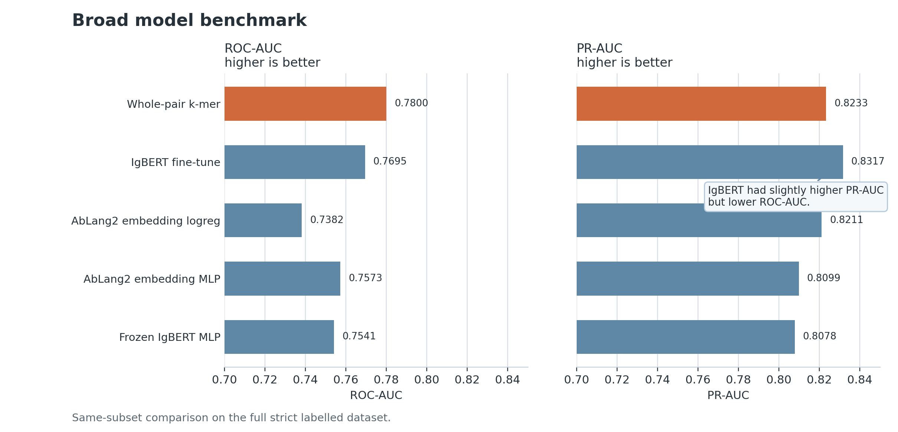
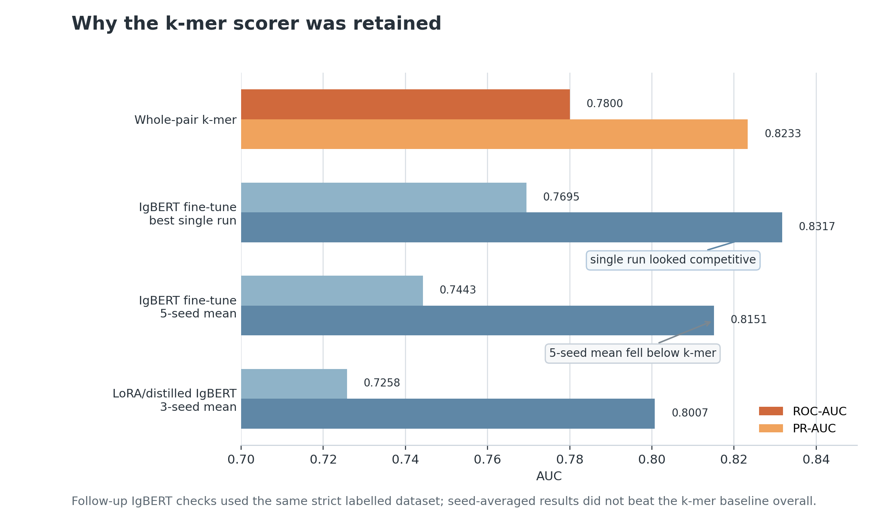
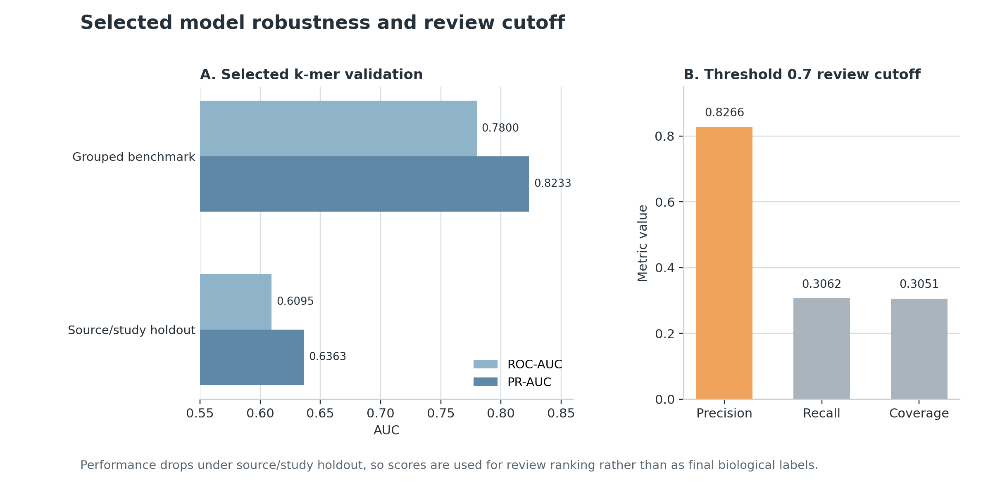
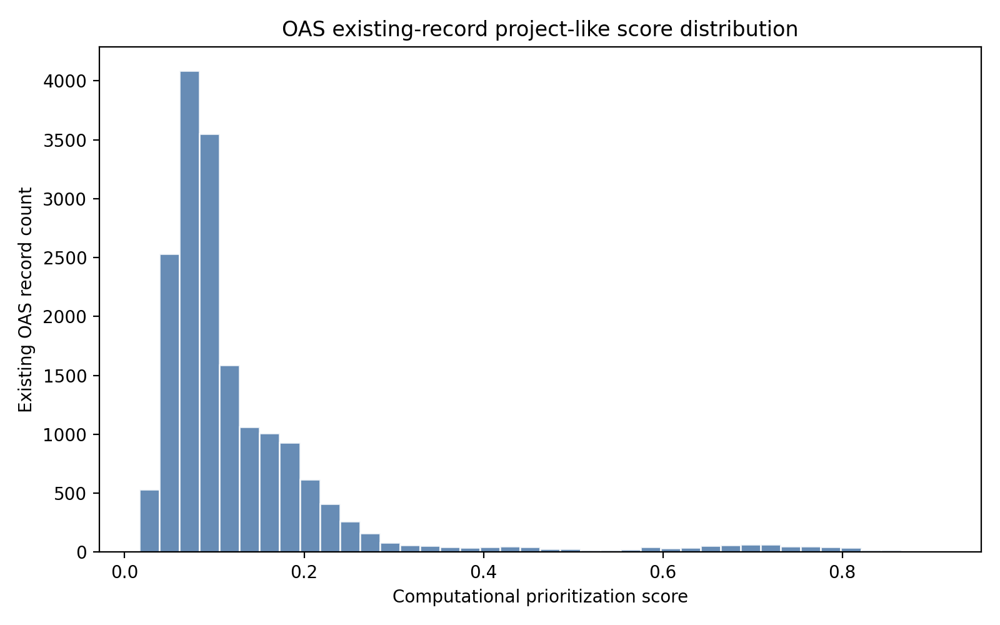
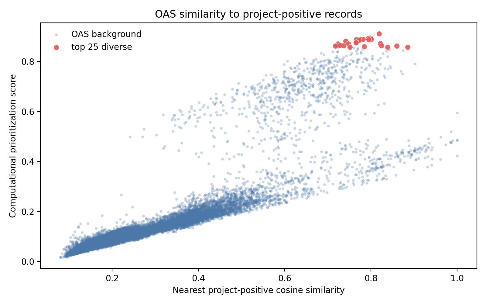
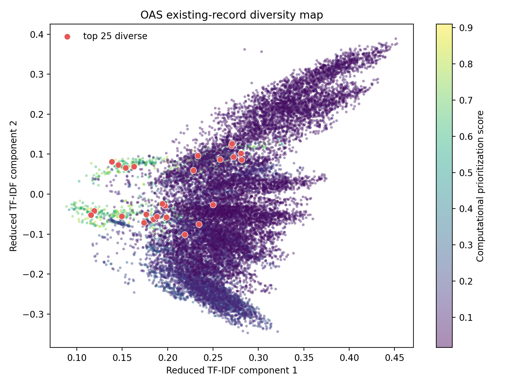

Biologics
Antibody sequence ML
Public antibody sequence-record workflow with supervised neutralisation benchmarking, antibody representation checks, unsupervised sequence-space analysis, source-holdout validation, and OAS existing-record prioritization.
At a glance
Workflow
The workflow starts from public CoV-AbDab SARS-CoV-2 antibody records. Heavy/VHH and light-chain sequences are cleaned, missing placeholders are standardized, amino acid strings are checked, and records are connected to source and target-region metadata when available.

Data
The strict labeled table is used for supervised model benchmarking, grouped validation, calibration, model selection, and sequence-space analysis. A broader prepared table keeps missing-label and conflict-label records for review scoring instead of forcing them into the supervised benchmark.
| Table | Rows | Use |
|---|---|---|
| Strict labeled ML table | 5,573 | Supervised benchmarking, grouped validation, source holdout, calibration, and sequence-space summaries. |
| Broader prepared table | 11,748 | Existing-record scoring and missing/conflict-label review categories. |
| Paired annotated subset | 5,092 | CDR and region comparisons on paired-chain records. |
| OAS background records | 17,882 | Unknown-target natural antibody background for retrieval and review prioritization. |
Methods
Character k-mer TF-IDF baselines, logistic regression, CDR/region features, AbLang2 and IgBert benchmark comparisons, unsupervised cached-embedding landscape analysis, calibration analysis, OAS background retrieval, and existing-record ranking.
Model benchmarking and selection
The first comparison showed that the whole-pair k-mer model and IgBert fine-tuning were close. The k-mer model reached ROC-AUC 0.7800 and PR-AUC 0.8233, while the best single IgBert fine-tuning run reached ROC-AUC 0.7695 and PR-AUC 0.8317. IgBert improved PR-AUC slightly, but did not improve ROC-AUC.

Additional checks retained the whole-pair k-mer model as the primary scorer. A five-seed IgBert fine-tuning check gave mean ROC-AUC 0.7443 and mean PR-AUC 0.8151, so pretrained alternatives are reported as benchmark evidence rather than treated as the selected model.

Validation
| Output | Result |
|---|---|
| Broad scorer | whole-pair k-mer TF-IDF logistic regression |
| Grouped validation | ROC-AUC 0.7800, PR-AUC 0.8233 |
| Source-robust weighted holdout | ROC-AUC 0.6095, PR-AUC 0.6363 |
| Threshold 0.7 | precision 0.8266, recall 0.3062, coverage 0.3051 |
| Unsupervised landscape | KMeans over cached pair embeddings; 9 clusters; labels overlaid after clustering |
| Paired-region scorer | region-only compact k-mer |
| Broader CoV-AbDab shortlist | 23 records |
| OAS existing-record scoring | 17,882 rows scored; top-25 diverse records |

Unsupervised sequence-space analysis
The unsupervised landscape used cached pair embeddings and KMeans clustering. Neutralisation labels and source metadata were overlaid after clustering, not used to assign clusters.

OAS existing-record prioritization
OAS records are treated as unknown-target natural antibody background, not as negative labels. The scoring module ranked 17,882 existing OAS rows and selected a top-25 diverse review shortlist using retrieval score, similarity to curated positive records, and diversity filtering.



Scope
Scope: retrospective public-record workflow with grouped validation, source-holdout analysis, unsupervised representation analysis, background retrieval, and existing-record ranking. It does not design, generate, mutate, or optimize new antibody sequences. Scores are review-prioritization signals, not binding probabilities or therapeutic-efficacy claims.
Reproducibility
The standalone repository includes reports, metrics, figures, model and data cards, and lightweight checks.
make reproduce-small
make testTechnical focus
Sequence-feature engineering, unsupervised embedding-space analysis, grouped validation, source effects, calibration, and record-prioritization workflow design.